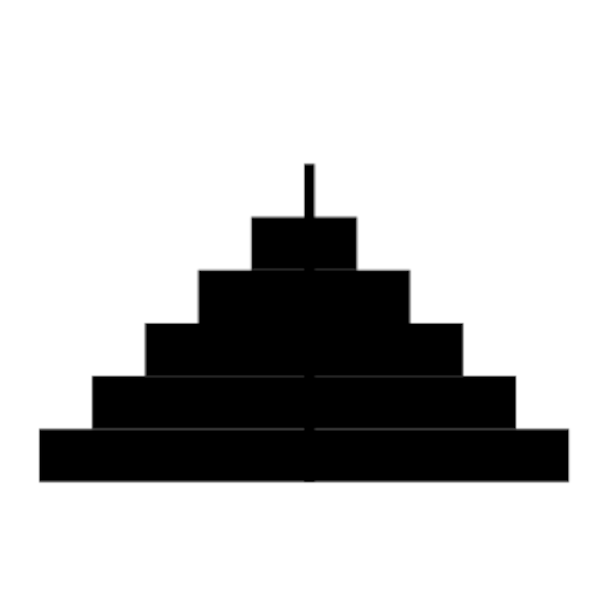

Assignment 26 - Towers of Hanoi
Example Output

Learning Outcomes
- Recursion
- ArrayLists
Goals
The purpose of the assignment is to learn to
1. Display Symbols using SymbolCollection.
2. Solve a problem using logical steps.
3. Display multiple visualizations to Bridges.
Description
Tasks
- Draw 3 rectangles to the screen as pegs for the disks
- Create disk objects with a location and draw them to the first peg
- Move the disks while following the rules of the game
- Visualize to bridges after each move
Game Rules
- Only move one disk at a time.
- A move consists of taking the top disk and moving it to another peg.
- Disks that are larger may not be placed on smaller disks.
Extensions
Help
For C++
Bridges documentation
SymbolCollection documentation
For Java
Bridges documentation
SymbolCollection documentation
For Python
Bridges documentation
SymbolCollection documentation